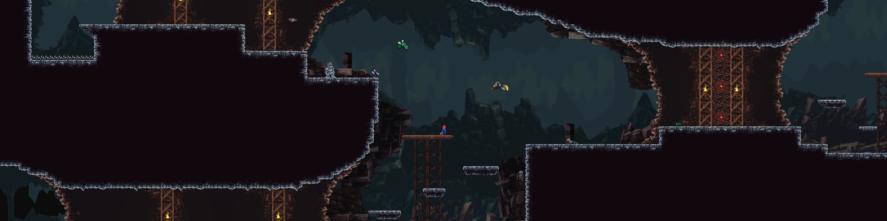
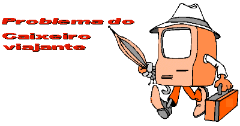

Projetos em andamento:
-
Elisis
Projeto iniciado ano passado com vários iatos no desenvolvimento, porém, bem emcaminhado, para ver mais clique aqui
-
Evento game jam
Projeto iniciado esse ano, entrei no projeto no meio do andamento, ficando responsável por ensinar a fazer a arte e animação do personagem principal e do boss
-
TCC
Este é um projeto de um programa que resolve o problema do caixeiro viajante. Meu programa usa uma técnica de redução do espaço de busca, ele consegue de forma eficiente verificar que o caminho que está percorrendo não é o melhor, e com isso chega ao resultado do melhor caminho em tempo O(2^n), para saber mais clique aqui
Projetos feitos:
-
Jogo de Papers Please

Feito há alguns anos atrás, este projeto, feito em Java e usando a biblioteca JFrame, foi desenvolvido para ajudar a memorizar a cidade de país. No jogo, você precisa verificar se a cidade está correta com o país do documento da pessoa. Se a cidade for memorizada, o jogo se torna mais fácil e rápido. O jogo mostra na parte de cima a cidade, e os botões são os paises, o objetivo é acertar o máximo possível das 21 cidades. para ver o projeto, segue o link: jogo
Considerações finais:
-
Eu ainda tenha vários outros projetos, em java e na unity, porém para o dever atual, acho que isso basta